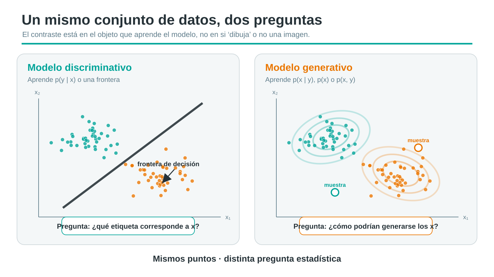
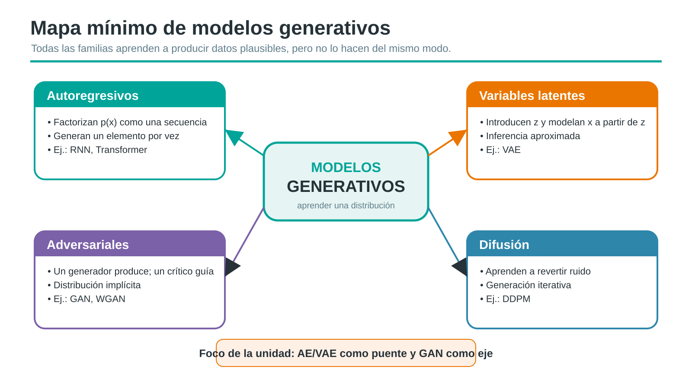
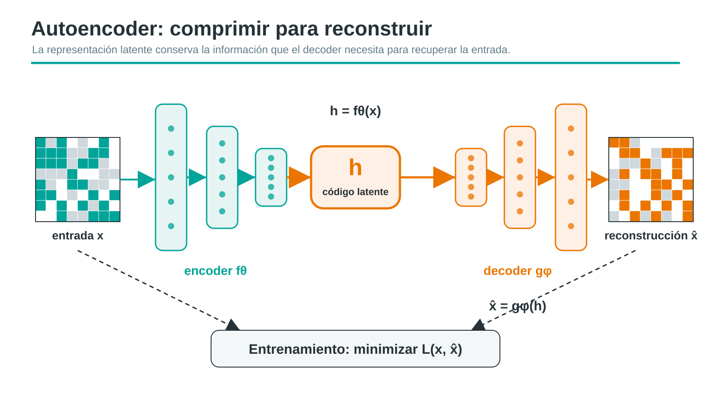
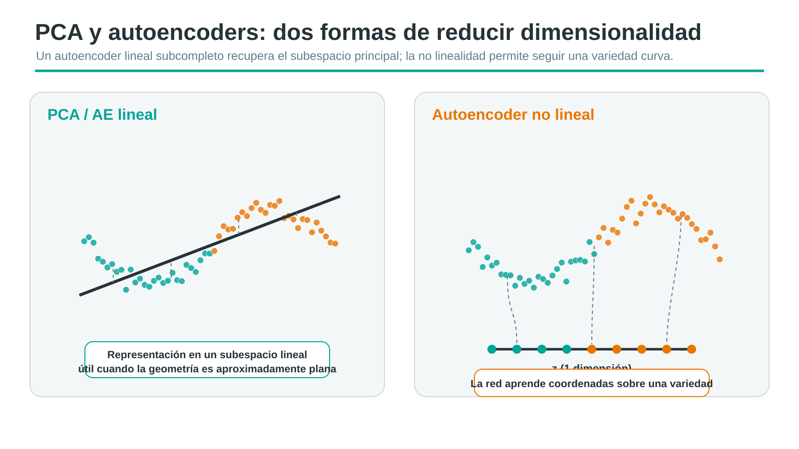
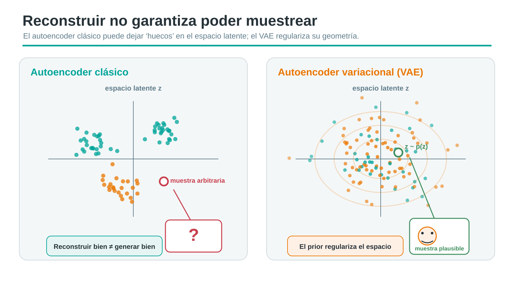
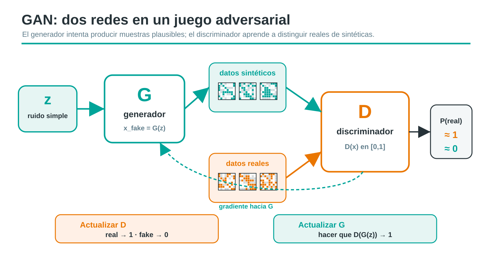
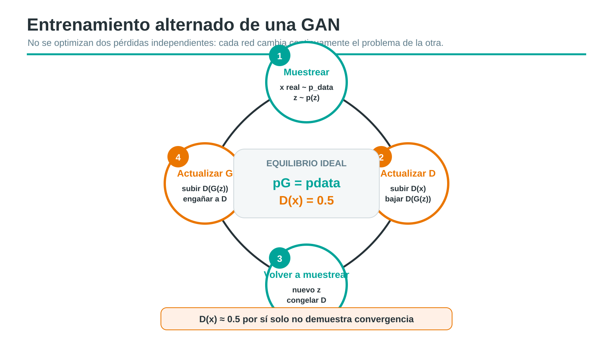
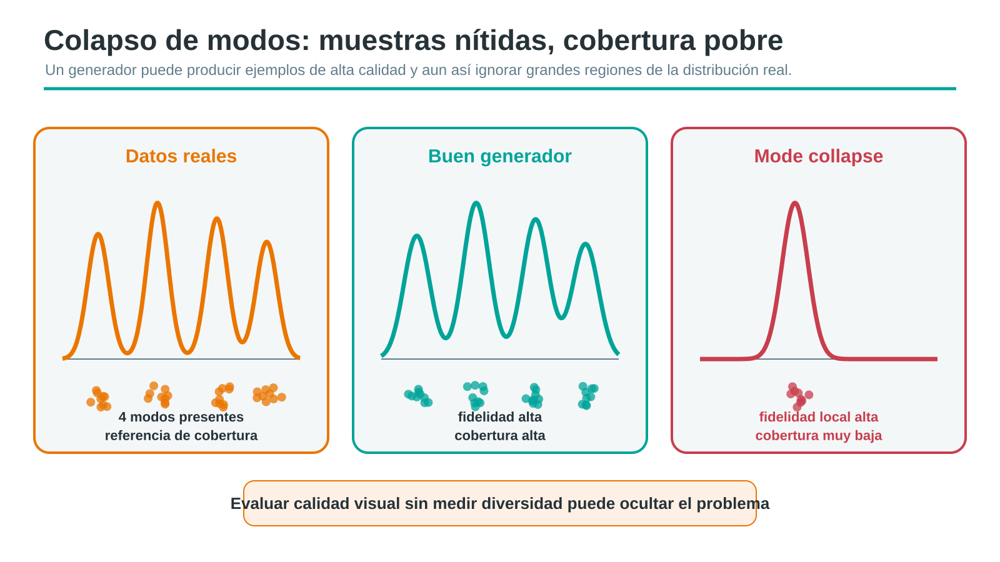
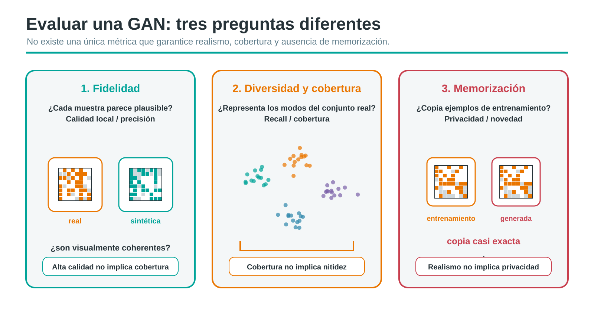
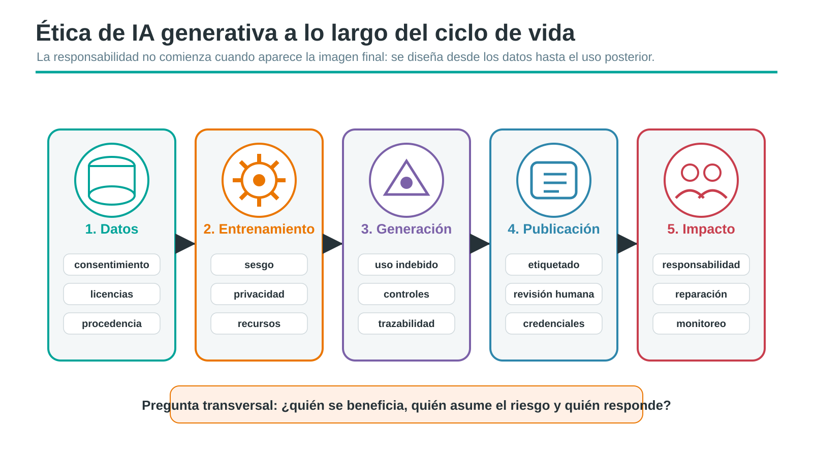

Deep Learning
Unidad 5: Introducción a Modelos Generativos
0.1 De predecir a generar
En la unidad anterior vimos redes recurrentes capaces de generar secuencias de forma autoregresiva: el modelo predice el siguiente elemento y luego lo vuelve a usar como entrada.
Ahora la pregunta cambia:
No solo queremos saber qué salida predice la red, sino qué estructura o distribución de datos aprendió y cómo podría producir nuevas observaciones plausibles.
Idea de partida
Un modelo generativo no es sinónimo de GAN, ni de modelo que crea imágenes. Es una familia más amplia de enfoques para modelar cómo se distribuyen los datos.
0.2 Pregunta motivadora
Supongamos que tenemos miles de ejemplos: imágenes, señales, textos, perfiles de clientes o series temporales.
¿Qué tendría que aprender una red para inventar un ejemplo nuevo pero plausible, que no sea una copia exacta, pero que respete regularidades del conjunto original?
Esa pregunta nos obliga a pensar en:
- distribuciones, no solo etiquetas;
- representaciones latentes, no solo predicciones;
- muestreo, no solo ajuste;
- riesgos, no solo resultados visualmente atractivos.
0.3 Resultados de aprendizaje
Al finalizar la unidad, el estudiantado debería poder:
- distinguir modelos discriminativos y generativos por el objeto probabilístico o función que aprenden;
- explicar la arquitectura encoder–espacio latente–decoder y la pérdida de reconstrucción;
- relacionar autoencoders lineales subcompletos con PCA y reconocer el papel de la no linealidad;
- explicar por qué un autoencoder clásico no es automáticamente un buen modelo generativo;
- describir la arquitectura, objetivo minimax y entrenamiento alternado de una GAN;
- reconocer inestabilidad, colapso de modos, baja cobertura y memorización;
- evaluar beneficios, riesgos y medidas de mitigación asociados al contenido sintético.
0.4 Mapa de la unidad
- Modelos discriminativos y generativos.
- Autoencoders y aprendizaje de representaciones.
- VAE como puente hacia espacios latentes regularizados.
- GAN como modelo generativo implícito.
- Evaluación, limitaciones, contenido sintético y ética.
La unidad se apoya en ideas de los textos base del curso (Goodfellow et al. 2016; Géron 2022; Raschka y Mirjalili 2019; Zhang et al. 2023) y en trabajos primarios para autoencoders, VAE y GAN.
1 Modelos discriminativos y generativos
1.1 Un mismo conjunto de datos, dos preguntas

Comparación conceptual entre un modelo discriminativo, que aprende una frontera, y uno generativo, que aprende distribuciones de los datos
La diferencia no es “clasificar versus crear imágenes”. La diferencia está en qué objeto aprende el modelo y qué preguntas permite responder.
1.2 Definición formal
1.2.1 Discriminativo
Aprende directamente una regla o probabilidad condicional:
\[ \text{discriminativo: } p_\theta(y\mid x) \text{ o } \hat y=f_\theta(x). \]
Ejemplos: regresión logística, MLP clasificador, CNN clasificadora.
1.2.2 Generativo
Modela la distribución de los datos o su relación conjunta:
\[ \text{generativo: } p_\theta(x),\;p_\theta(x,y) \text{ o } p_\theta(x\mid y). \]
Ejemplos: Naive Bayes, modelos autoregresivos, VAE, GAN.
Esta distinción aparece tempranamente en la comparación entre regresión logística y Naive Bayes de Ng y Jordan (2002).
1.3 Un generativo también puede clasificar
Si un modelo estima \(p(x\mid y)\) y \(p(y)\), puede obtener \(p(y\mid x)\) usando Bayes:
\[ p(y\mid x)= \frac{p(x\mid y)p(y)}{p(x)}. \]
- Naive Bayes es generativo porque modela cómo se generan las variables \(x\) bajo cada clase.
- Luego puede clasificar calculando cuál clase hace más probable el dato observado.
- Por eso, generativo no significa “sin etiquetas”.
1.4 Comparación rápida
| Aspecto | Discriminativo | Generativo |
|---|---|---|
| Pregunta típica | ¿Cuál es \(y\) dado \(x\)? | ¿Cómo se distribuye \(x\) o \((x,y)\)? |
| Objeto aprendido | \(p(y\mid x)\) o \(f(x)\) | \(p(x)\), \(p(x,y)\), \(p(x\mid y)\) o un mecanismo de muestreo |
| Ejemplos | regresión, MLP/CNN clasificadora | Naive Bayes, autoregresivos, VAE, GAN |
| Ventaja | predicción directa | simulación, imputación, generación, análisis de estructura |
| Límite | no modela necesariamente los datos | puede ser más difícil de entrenar/evaluar |
| Muestreo | no necesariamente | sí, si el modelo define un mecanismo de generación |
Advertencia
Producir una salida no convierte automáticamente a una red en modelo generativo. Un clasificador produce una etiqueta, pero no necesariamente permite muestrear nuevos datos plausibles.
Confusiones frecuentes
Generativo no significa necesariamente no supervisado; discriminativo no significa únicamente clasificación; y el discriminador de una GAN es una pieza discriminativa dentro de un sistema generativo.
1.5 Actividad breve
Clasifiquemos los siguientes modelos según la pregunta que responden:
| Modelo | ¿Discriminativo, generativo o depende? | Pista |
|---|---|---|
| Regresión logística | Discriminativo | estima \(p(y\mid x)\) |
| Naive Bayes | Generativo | estima \(p(x\mid y)\) y \(p(y)\) |
| MLP clasificador | Discriminativo | aprende una frontera o probabilidad condicional |
| RNN autoregresiva | Generativo | modela el siguiente elemento de una secuencia |
| VAE | Generativo probabilístico | regulariza un espacio latente muestreable |
| GAN | Generativo implícito | genera muestras mediante \(G(z)\) |
1.6 Mapa mínimo de familias generativas

Mapa de familias de modelos generativos: autoregresivos, autoencoders variacionales, GAN, difusión y flujos normalizantes
Alcance de esta unidad
Nos concentraremos en autoencoders y VAE como puente conceptual hacia espacios latentes, y en GAN como eje de los modelos generativos implícitos. Difusión y flujos quedan ubicados en el mapa, pero no serán el foco.
2 Autoencoders
2.1 Arquitectura encoder–código–decoder

Arquitectura de un autoencoder con entrada, encoder, código latente, decoder y reconstrucción
Un autoencoder aprende a comprimir una entrada \(x\) en un código latente \(h\) y luego reconstruir una versión \(\hat{x}\) de la entrada original.
2.2 Formulación
El encoder produce una representación:
\[ h=f_\theta(x), \qquad \hat{x}=g_\phi(h). \]
El entrenamiento minimiza una pérdida de reconstrucción:
\[ \min_{\theta,\phi} \frac{1}{n}\sum_{i=1}^{n} \mathcal{L}\left( x_i, g_\phi(f_\theta(x_i)) \right). \]
Para datos continuos suele usarse MSE. La entropía cruzada tiene sentido cuando la salida se interpreta como probabilidad, por ejemplo en datos binarios o normalizados con una salida compatible.
2.3 Identidad, capacidad y tipos
Si el modelo tiene demasiada capacidad y ninguna restricción, copiar puede ser una solución tentadora.
Para evitar una copia trivial, se introducen restricciones:
- cuello de botella: el código tiene menor dimensión que la entrada;
- regularización: penaliza ciertos patrones de activación o sensibilidad;
- ruido: obliga a reconstruir una señal limpia desde una versión degradada;
- control de capacidad: limita profundidad, unidades o entrenamiento.
Advertencia
Un autoencoder puede memorizar. Una reconstrucción buena no demuestra por sí sola que aprendió una estructura generalizable.
2.3.1 Subcompleto
Código más pequeño que la entrada.
Aprende una compresión útil si la pérdida y la capacidad están bien elegidas.
2.3.2 Sobrecompleto
Código igual o mayor que la entrada.
Requiere restricciones adicionales para evitar copia directa.
2.3.3 Regularizado
Agrega penalizaciones, ruido o restricciones geométricas.
Busca representaciones más estables o robustas.
Los autoencoders profundos se popularizaron como herramientas de reducción de dimensionalidad y representación no lineal (Hinton y Salakhutdinov 2006).
2.4 PCA frente a autoencoder

Comparación entre PCA como proyección lineal y autoencoder como representación no lineal aprendida
Un autoencoder lineal subcompleto entrenado con MSE aprende el mismo subespacio principal que PCA. Sin embargo, los pesos aprendidos no tienen por qué coincidir exactamente con los vectores propios ortonormales de PCA.
La no linealidad permite representar estructuras que una proyección lineal no captura bien.
2.5 Variantes conceptuales
| Variante | Restricción principal | Intuición |
|---|---|---|
| Sparse autoencoder | pocas unidades activas | representar con códigos selectivos |
| Denoising autoencoder | reconstruir desde entradas ruidosas | aprender rasgos robustos, no copiar píxeles |
| Contractive autoencoder | penalizar sensibilidad local | hacer estable la representación ante pequeñas perturbaciones |
Vincent et al. (2008) introduce los denoising autoencoders como una forma de aprender características robustas a partir de entradas corrompidas.
Lectura práctica
Todas estas variantes intentan responder la misma preocupación: ¿qué evita que el modelo aprenda una copia trivial?
2.6 Tres verbos de uso
- Representar: reducción de dimensionalidad, visualización o extracción de características.
- Reconstruir: denoising, imputación o compresión con pérdida.
- Detectar diferencias: anomalías mediante error o estructura de reconstrucción.
Advertencia
Un error de reconstrucción alto no demuestra automáticamente una anomalía. Puede reflejar cambio de distribución, mala calibración, sesgo del conjunto de entrenamiento o una arquitectura inadecuada.
2.7 Interpolación en el espacio latente
Si tenemos dos códigos observados \(z_1\) y \(z_2\), podemos interpolar:
\[ z(\alpha)=(1-\alpha)z_1+\alpha z_2, \qquad 0\leq \alpha \leq 1. \]
Esto puede producir transiciones suaves entre reconstrucciones. Pero interpolar entre códigos de datos observados no es lo mismo que muestrear puntos arbitrarios del espacio latente.
La geometría del espacio latente importa: regiones sin datos pueden decodificarse en salidas poco plausibles.
2.8 Reconstruir no garantiza poder muestrear

Comparación entre un autoencoder clásico con espacio latente irregular y un VAE con prior latente más regularizado para muestreo
Un autoencoder clásico aprende a reconstruir datos después de codificarlos. Eso no implica que cualquier punto del espacio latente sea válido para generar una observación plausible.
2.9 VAE como puente conceptual
Un VAE introduce una lectura probabilística del espacio latente (Kingma y Welling 2014):
\[ q_\phi(z\mid x), \qquad p(z), \qquad p_\theta(x\mid z). \]
- El encoder aproxima una distribución latente, no solo un punto.
- El prior simple, por ejemplo \(p(z)=\mathcal{N}(0,I)\), ordena el espacio.
- El decoder define cómo una muestra latente puede producir una observación.
ELBO en una línea
La pérdida combina reconstrucción y regularización del latente. No necesitamos derivarla completa para entender el puente: el VAE intenta que el espacio latente sea más muestreable.
2.10 ¿Qué podemos afirmar de un autoencoder clásico?
2.10.1 Sí podemos decir
- aprende una representación comprimida o regularizada;
- reconstruye entradas similares a las vistas;
- puede apoyar visualización, denoising o detección exploratoria;
- puede producir interpolaciones interesantes.
2.10.2 No deberíamos afirmar
- que define automáticamente una densidad \(p(x)\);
- que cualquier punto latente genera datos válidos;
- que bajo error implica normalidad;
- que reconstruir equivale a modelar toda la distribución.
3 GAN: modelos generativos adversariales
3.1 Motivación e idea central
Las GAN fueron introducidas por Goodfellow et al. (2014) como un juego entre dos redes:
- Un generador intenta producir ejemplos sintéticos plausibles.
- Un discriminador intenta distinguir ejemplos reales de sintéticos.
- El aprendizaje surge de objetivos opuestos, no de comparar cada salida con una imagen objetivo específica.
Esta idea dio origen a una familia amplia de modelos, especialmente influyente en generación visual, aunque no es el único enfoque generativo actual.
3.2 Arquitectura GAN

Arquitectura de una GAN: ruido latente entra al generador, datos reales y sintéticos entran al discriminador
- \(z \sim p_z(z)\): ruido o variable latente simple.
- \(x_{\text{fake}} = G_\theta(z)\): muestra sintética creada por el generador.
- \(D_\phi(x)\): puntuación o probabilidad de que \(x\) sea real en la formulación original.
3.3 Objetivo minimax original
Primero, el discriminador intenta asignar alta probabilidad a datos reales y baja probabilidad a datos generados. Al mismo tiempo, el generador intenta que sus muestras sean clasificadas como reales.
\[ \min_G\max_D\;V(D,G) = \mathbb{E}_{x\sim p_{data}}[\log D(x)] + \mathbb{E}_{z\sim p_z}[\log(1-D(G(z)))]. \]
El primer término premia reconocer datos reales. El segundo premia detectar datos falsos. El generador minimiza el objetivo buscando que \(D(G(z))\) aumente.
En la práctica se usa a menudo una alternativa para entrenar al generador:
\[ \mathcal{L}_G = -\mathbb{E}_{z\sim p_z}\log D(G(z)). \]
La idea es entregar una señal de entrenamiento más útil cuando el discriminador rechaza con demasiada seguridad las muestras generadas. Esto no es una arquitectura distinta: es una forma alternativa de optimizar el generador.
3.4 Entrenamiento alternado

Ciclo de entrenamiento alternado de una GAN: muestrear ruido, generar ejemplos, actualizar discriminador y actualizar generador
- Muestrear datos reales y ruido latente.
- Generar ejemplos sintéticos con \(G\).
- Actualizar \(D\) para distinguir real versus sintético.
- Actualizar \(G\) para aumentar la probabilidad de engañar a \(D\).
No hay implementación práctica de GAN en esta unidad: el foco es entender la arquitectura, el objetivo y sus limitaciones.
3.5 Equilibrio ideal y modelo implícito
Bajo supuestos idealizados, si el generador reproduce perfectamente la distribución de datos:
\[ p_g = p_{data} \qquad \text{y} \qquad D(x)=\frac{1}{2}. \]
Advertencia
Observar \(D(x)\approx 0.5\) por sí solo no demuestra convergencia. También puede ocurrir por un discriminador débil, entrenamiento inestable o señales poco informativas.
La teoría entrega una brújula; el entrenamiento real suele ser mucho menos amable.
Una GAN permite muestrear:
\[ z\sim p_z(z), \qquad x = G_\theta(z). \]
Decimos que es un modelo generativo implícito porque puede generar muestras, pero normalmente no entrega una densidad tratable \(p_G(x)\) para evaluar la probabilidad exacta de una observación.
Esto contrasta con modelos que optimizan verosimilitud explícita o aproximada, como algunos autoregresivos, flujos normalizantes o VAE.
3.6 GAN condicional y variantes
3.6.1 GAN condicional
Agrega una condición \(y\):
\[ G(z,y), \qquad D(x,y). \]
Ejemplo: generar una imagen condicionada por clase, estilo o atributo.
3.6.2 Variantes
- DCGAN: convoluciones para imágenes (Radford et al. 2016).
- Conditional GAN: control por etiqueta o atributo.
- WGAN/WGAN-GP: estabilidad y señal de entrenamiento; usa un critic, no un discriminador probabilístico estándar (Arjovsky et al. 2017).
- CycleGAN: traducción entre dominios sin pares exactos.
- StyleGAN: control multiescala y alta fidelidad.
3.7 Aplicaciones con condiciones de uso
| Aplicación | Potencial | Cuidado necesario |
|---|---|---|
| Síntesis visual | prototipos, creatividad, simulación | evitar confundir plausibilidad con verdad |
| Traducción de dominios | estilos, mapas, modalidades | validar preservación semántica |
| Aumento de datos | ampliar variabilidad aparente | no garantiza mejor generalización |
| Simulación | escenarios raros o costosos | revisar sesgos y cobertura |
| Diseño | explorar alternativas | mantener evaluación humana y restricciones reales |
3.8 Problemas de entrenamiento
- Inestabilidad por el juego dinámico entre \(G\) y \(D\).
- Discriminador demasiado fuerte: gradientes poco informativos para el generador.
- Sensibilidad a arquitectura, normalización, optimizador e hiperparámetros.
- Colapso de modos: muchas entradas latentes producen salidas parecidas.
- Memorización: muestras que se acercan demasiado a datos de entrenamiento.
Estas dificultades motivaron variantes como DCGAN y WGAN, además de métricas que intentan separar calidad, diversidad y cobertura.
3.9 Mode collapse

Ilustración de colapso de modos: el generador cubre solo una parte de la distribución real aunque algunas muestras sean convincentes
Advertencia
Puede existir alta fidelidad local y baja cobertura. Es decir, algunas muestras se ven muy buenas, pero el generador ignora regiones completas de la distribución real.
3.10 Evaluación en tres preguntas

Tres preguntas para evaluar modelos generativos: fidelidad, diversidad/cobertura y memorización/privacidad
- Fidelidad/calidad: ¿las muestras parecen plausibles?
- Diversidad/cobertura: ¿capturan los distintos modos de los datos?
- Memorización/privacidad: ¿replican ejemplos de entrenamiento o información sensible?
FID y precision/recall para modelos generativos son herramientas útiles, pero imperfectas (Kynkäänniemi et al. 2019). Ninguna métrica única certifica calidad o seguridad.
4 Impacto, contenido sintético y ética
4.1 Oportunidades y riesgos
| Par de tensión | Oportunidad | Riesgo |
|---|---|---|
| Creatividad / engaño | nuevas formas expresivas | desinformación o suplantación |
| Datos sintéticos / privacidad | compartir datos menos sensibles | fuga o reconstrucción de identidades |
| Representación / sesgo | escenarios diversos | amplificación de sesgos históricos |
| Acceso / trabajo | herramientas más accesibles | desplazamiento o precarización |
| Innovación / ambiente | experimentación rápida | costos computacionales y energéticos |
NIST organiza riesgos de IA generativa a lo largo del ciclo de vida y de sus impactos técnicos, sociales y organizacionales (National Institute of Standards and Technology 2024).
4.2 Ética a lo largo del ciclo de vida

Ciclo de vida ético para IA generativa: datos, entrenamiento, evaluación, despliegue, monitoreo e impacto
La ética no aparece al final como un filtro cosmético. Debe estar presente en la selección de datos, el propósito, la evaluación, el despliegue, la documentación y el monitoreo.
La Recomendación de UNESCO enfatiza derechos humanos, diversidad, transparencia, responsabilidad y sostenibilidad como principios de gobernanza de IA (UNESCO 2021).
4.3 Caso de discusión y procedencia
Una universidad quiere entrenar una GAN con fotografías institucionales y retratos de estudiantes para crear imágenes sintéticas destinadas a campañas comunicacionales.
Preguntas para discutir:
- ¿Cuál es el propósito y quién se beneficia?
- ¿Existe consentimiento explícito y revocable?
- ¿Qué licencias y derechos aplican a las fotografías?
- ¿Cómo se evalúan representación, sesgos y privacidad?
- ¿Debe etiquetarse el contenido como sintético?
- ¿Quién revisa, aprueba y responde por las imágenes publicadas?
Procedencia no es detección infalible
Metadatos, firmas, marcas de agua o Content Credentials pueden ayudar a documentar el origen y el historial de un archivo. Pero procedencia y detección automática no son lo mismo:
- la procedencia registra información sobre creación y edición;
- un detector intenta inferir si algo fue generado o manipulado;
- ninguna de las dos equivale por sí sola a una prueba universal de veracidad.
La especificación C2PA 2.2 documenta un estándar técnico para procedencia de contenido; fue consultada el 19 de junio de 2026 (Coalition for Content Provenance and Authenticity 2026).
4.4 Síntesis final
| Modelo | Objetivo | Latente | Muestreo | Densidad | Fortalezas | Limitaciones |
|---|---|---|---|---|---|---|
| Discriminativo | predecir \(y\) desde \(x\) | no central | no necesariamente | \(p(y\mid x)\) o función | predicción directa | no modela \(p(x)\) |
| AE clásico | reconstruir \(x\) | código aprendido | limitado | no explícita | representación y compresión | latente no necesariamente muestreable |
| VAE | reconstruir y regularizar | probabilístico | sí, desde prior | aproximada | generación con estructura latente | muestras a veces suaves |
| GAN | engañar al discriminador | ruido \(z\) | sí, vía \(G(z)\) | implícita | alta fidelidad visual | entrenamiento difícil, cobertura y memorización |
4.5 Exit ticket
Marca cada afirmación como verdadera o falsa:
- “Un modelo generativo puede utilizarse para clasificación”.
- “Todo autoencoder permite generar datos válidos desde cualquier punto latente”.
- “Si el discriminador entrega 0.5, la GAN necesariamente convergió”.
- Verdadero.
- Falso.
- Falso.
5 Referencias